Early Beginnings
Graphic design traces its roots back to ancient civilizations—Egyptian hieroglyphics, Roman signage, and Chinese calligraphy.
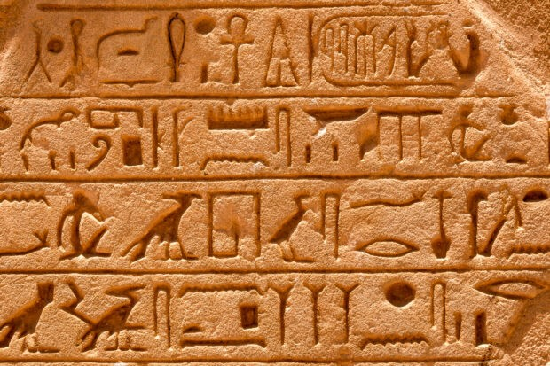Printing Revolution (1450–1700)
The invention of the printing press by Johannes Gutenberg transformed design from hand-drawn to type-set publications.

Modernism in Design (1900–1950)
Bauhaus, Swiss Design, and minimalism shaped clean, functional, and typography-driven layouts still used today.

Digital Revolution (1980s–2000s)
With the rise of personal computing, Photoshop, Illustrator, and CorelDRAW opened limitless creative potential for designers worldwide.
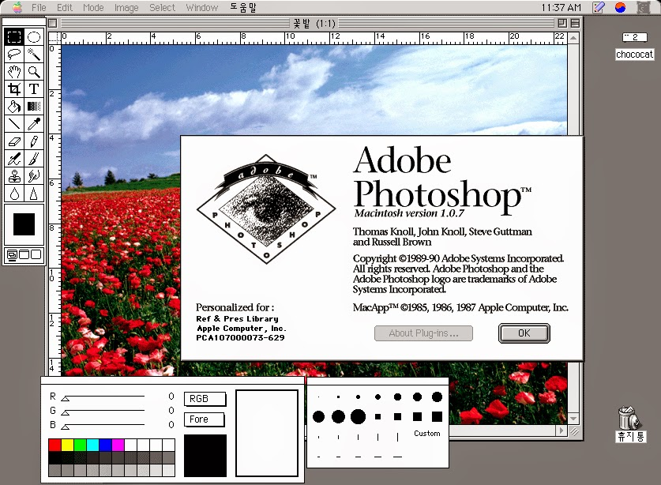Flat Design and Minimalism (2010s)
Driven by mobile and UI needs, flat design emphasized clarity, hierarchy, and vector-based assets with pastel colors and simplicity.
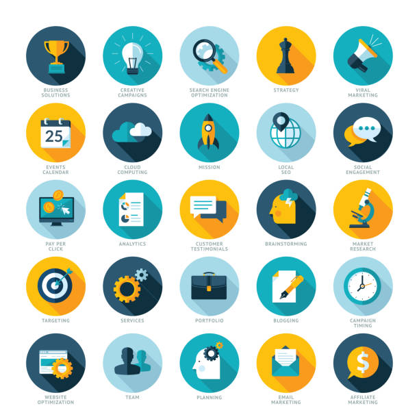Rise of User Experience (UX)
Designers began focusing on usability and human-centric interfaces, giving rise to wireframing, prototyping, and user flows.
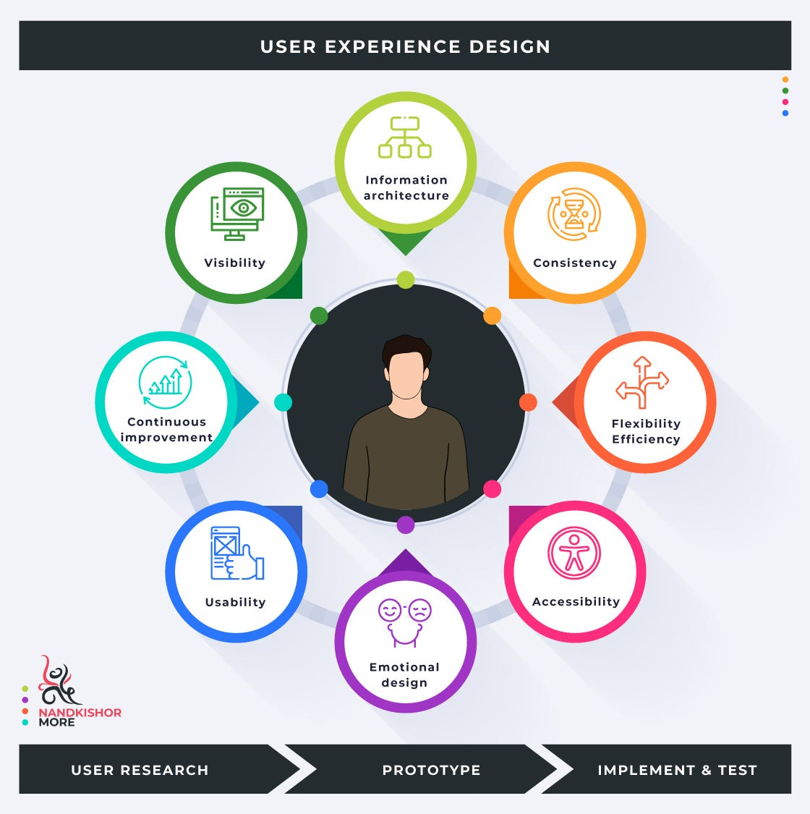Motion Graphics Evolution
Tools like After Effects allowed integration of dynamic elements into web and broadcast design, making visuals more engaging.
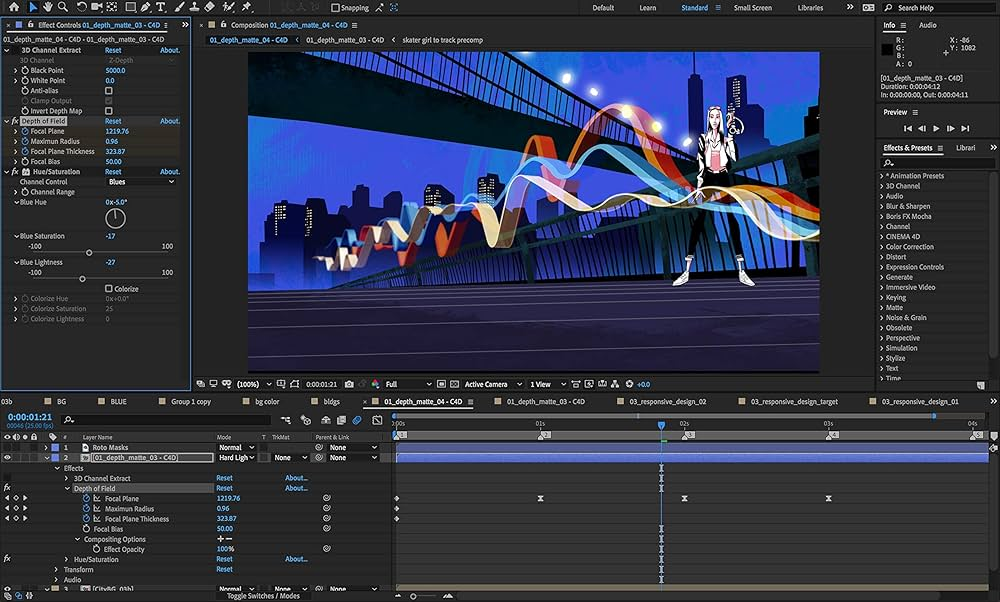AI in Graphic Design
With tools like Canva AI and Adobe Firefly, machine learning is now assisting or automating elements of the design process.
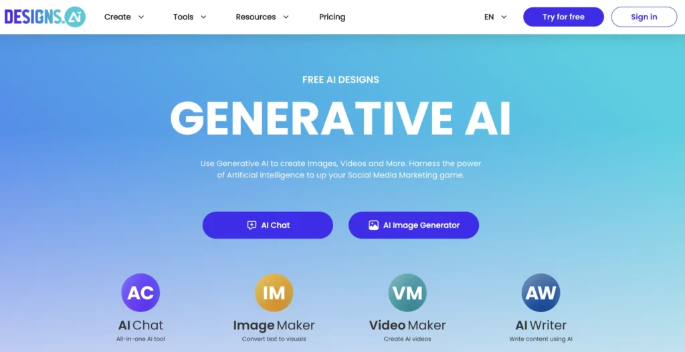3D in Web & Print
Three-dimensional assets, environments, and typography are now commonly used to add depth and realism to graphics.
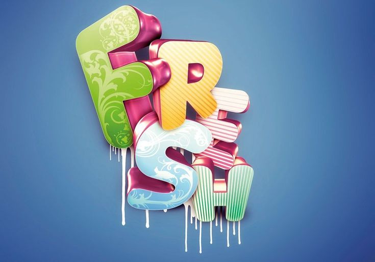Design for Accessibility
Modern designers are emphasizing readability, contrast ratios, and navigation for users with visual or physical disabilities.
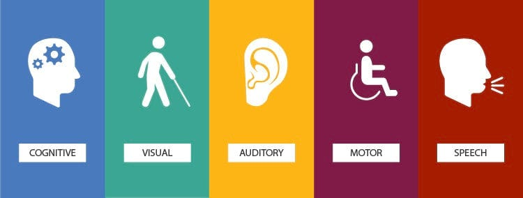Eco-Conscious Design
Minimal ink printing, digital-first publications, and sustainable packaging trends reflect environmentally aware design principles.
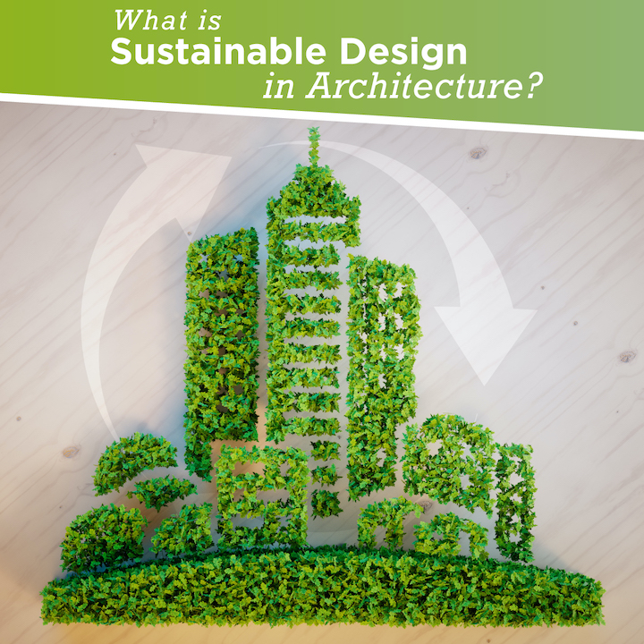Typography as Art
Fonts have become artistic statements—from kinetic type to expressive calligraphy—moving beyond pure readability.
Responsive Design
Web graphics must now scale beautifully across mobile, tablet, and desktop, prompting flexible layout systems like CSS Grid.

Infographics Boom
Information is visualized through colorful, data-driven illustrations to simplify learning and communication in modern media.
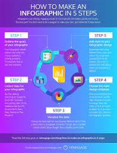Design Portfolios Online
Personal websites and platforms like Behance have redefined how designers showcase and evolve their craft globally.
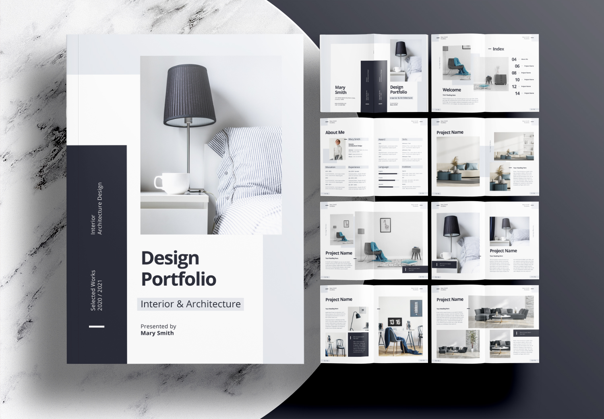